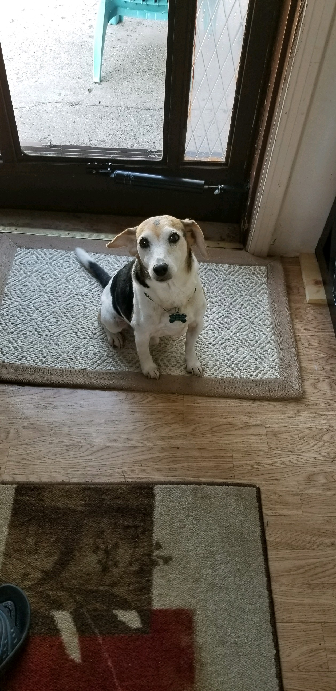

Welcome to Fons' Favorites, your go-to destination for all things pets, recipes, and travel! Explore a world of captivating content where we cater to your love for furry companions, culinary delights, and globetrotting adventures.
Background
I'm Alfonso. I have many nicknames, with Fons being one of them. I was born here in the great state of Michigan. My Sicilian-American family really helped shape my values and tastes. I am a junior at the University of Michigan studying Data Science
Likes
- Italian Food
- Dogs
- Traveling
Check more of my favorite pets, recipes, and travel destinations!
